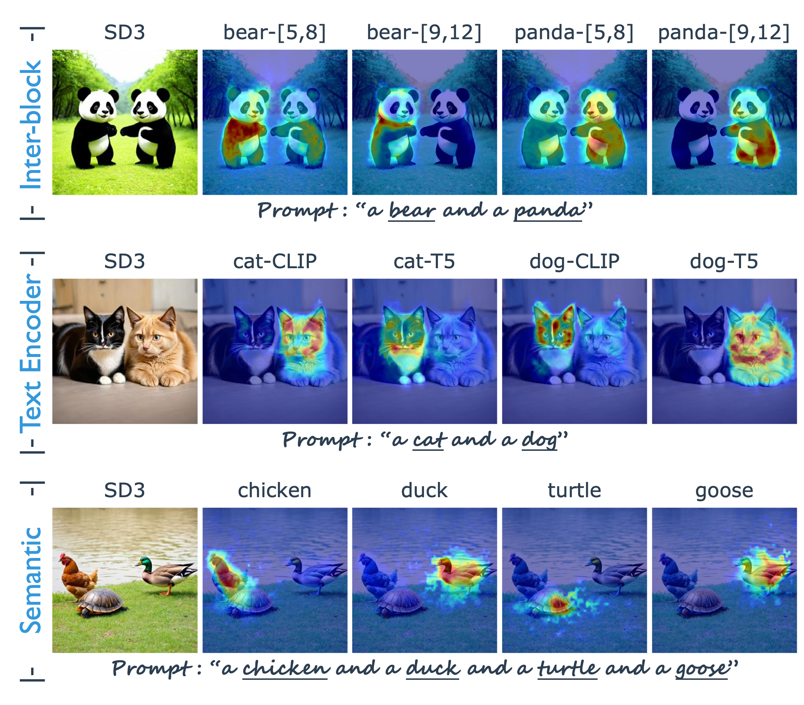
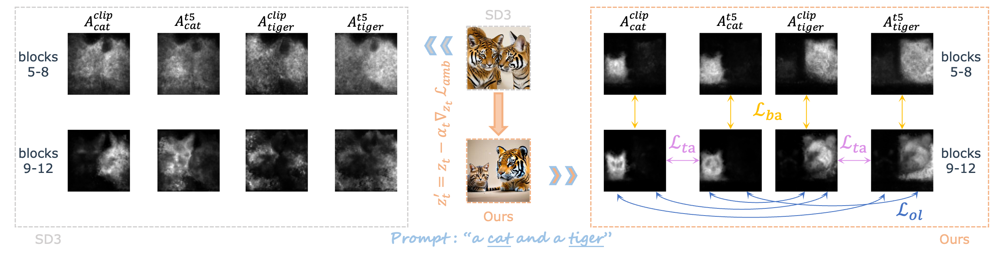
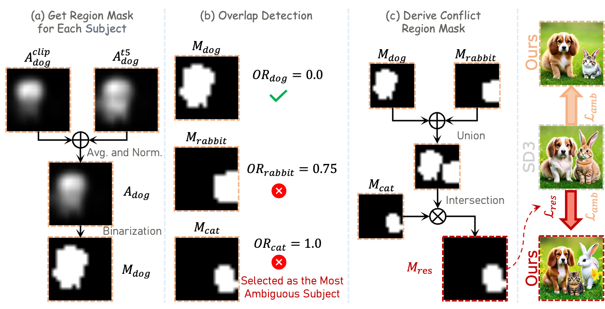
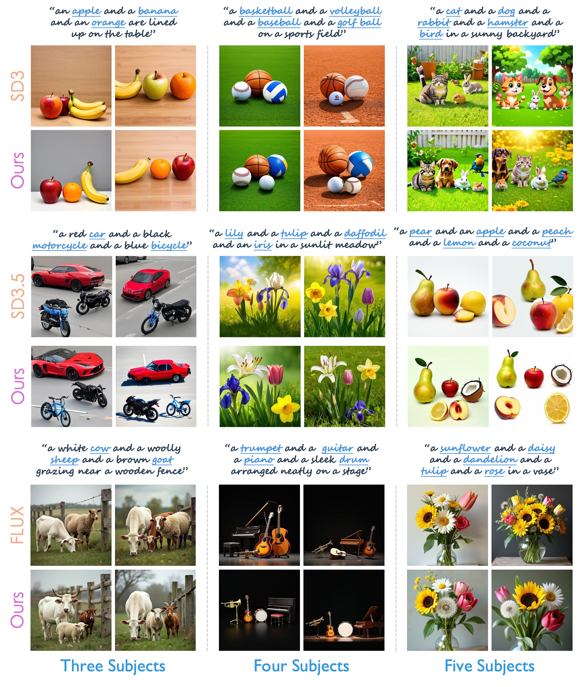

Representing the cutting-edge technique of text-to-image models, the latest Multimodal Diffusion Transformer (MMDiT) largely mitigates many generation issues existing in previous models. However, we discover that it still suffers from subject neglect or mixing when the input text prompt contains multiple subjects of similar semantics or appearance.
We identify three possible ambiguities within the MMDiT architecture that cause this problem: Inter-block Ambiguity, Text Encoder Ambiguity, and Semantic Ambiguity. To address these issues, we propose to repair the ambiguous latent on-the-fly by test-time optimization at early denoising steps. In detail, we design three loss functions: Block Alignment Loss, Text Encoder Alignment Loss, and Overlap Loss, each tailored to mitigate these ambiguities. Despite significant improvements, we observe that semantic ambiguity persists when generating multiple similar subjects, as the guidance provided by overlap loss is not explicit enough. Therefore, we further propose Overlap Online Detection and Back-to-Start Sampling Strategy to alleviate the problem.
Experimental results on a newly constructed challenging dataset of similar subjects validate the effectiveness of our approach, showing superior generation quality and much higher success rates over existing methods. The consistent and substantial improvements observed across multiple MMDiT based text-to-image models such as SD3, SD3.5 and FLUX provide strong evidence of the general applicability of our method.
(1) Ambiguities Present in MMDiT Generation: We observe that the subject neglect or mixing problem still troubles the MMDiT model when the input prompt contains two or especially more similar subjects. After a detailed and comprehensive diagnosis, the causes of these issues are categorized into three types of ambiguities (inter-block ambiguity, text encoder ambiguity, and semantic ambiguity) that exist in the MMDiT model generation process, as illustrated in the figure below.

(2) Mitigating Ambiguities: We repair the ambiguous latent on the fly using hints from word-based cross-attention maps through test-time optimization at early denoising steps. Accordingly, three tailored losses are proposed, as illustrated in the figure below.

(3) Advanced Strategies for Semantic Ambiguity: Thanks to this on-the-fly repair technique, the generation issues are greatly mitigated. However, we observe that for the case of three or more similar subjects generated, the problem of semantic ambiguity still exists to some extent despite the overlap loss imposed. We consider the underlying reason to be that overlap loss is implicit and does not provide more direct and effective guidance. Thankfully, we can diagnose and further repair the problem at the early stage of denoising with the hint of word-based cross-attention maps. The novel Overlap Online Detection and Back-to-Start Sampling Strategy is proposed as follows.


@article{wei2025enmmdit,
title = {Enhancing MMDiT-Based Text-to-Image Models for Similar Subject Generation},
author = {Wei, Tianyi and Chen, Dongdong and Zhou, yifan and Pan, Xingang},
journal = {Arxiv},
year = {2025},
}